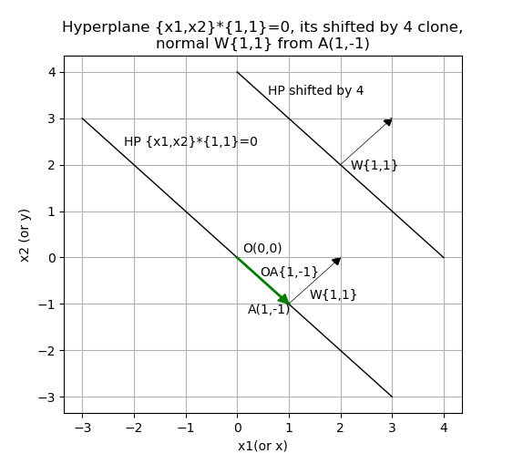

Understanding Support Vector Machines. From points to vectors. Make this with your eyes. Make this by calculator.
Keywords: Support vector machines.
* In different sources vectors are described in slightly different notations, e.g. a vector is named with just bold lower case letter, see references.
First, you should better watch video lecture (MIT-AI2010F)
Hyperplane. From points to vectors.
Hyperplane is a linear function described with this vector equation:
\begin{align} \overrightarrow{X} \cdot \overrightarrow{W} = 0 \end{align}
Where \(\overrightarrow{X}\) is a data vector (e.g. points from origin (0,0)) in N-dimention. \(\overrightarrow{W}\) is a coefficient vector. So, this is Dot-product of two vectors, i.e. for N-dimention this is:
\begin{align} \overrightarrow{X} \cdot \overrightarrow{W} = x1w1 + x2w2 + ... +xnwn \end{align}
For 2-D Hyperplane this is: x1w1 + x2w2 = 0, and this is equals x1w1/w1 + x2w2/w1 = 0, i.e. let w1=1, and we got simple equation: x1 + x2w2 = 0, i.e. x2 = -x1/w2
For standard geometry notation in dots this equation is a line function that goes through origin: y = ax, where a = -1/w2 in this case.
For 3D this is a plane that also goes trough origin (see MIT-MVC1)
To shift a function along an axis, you should just add a shifting constant b (see PRECALC-SHIFT), and so does for a Hyperplane(point, line, plane, etc.). So, shifted Hyperplane equation is:
\begin{align} \overrightarrow{X} \cdot \overrightarrow{W} + b = 0 \end{align}
Dot product of two vectors is also:
\begin{align} \overrightarrow{X} \cdot \overrightarrow{W} = \| \overrightarrow{X} \| \| \overrightarrow{W} \| cos \varTheta \end{align}
This means that a non-shifted Hyperplane's vectors in dot product are perpendicular to each other, i.e. \(cos \varTheta = 0 ⇒ \varTheta = 90^o\). That is \(\overrightarrow{W}\) is normal to \(\overrightarrow{X}\).
Consider the simplest example - Hyperplane in 2D y=-x, that is x2=-x1/w2, that is {x1,x2}*{1,1}=0. Any point is also a vector from the origin, so lets draw this hyperplane plus its shifted by 4 clone, plus a point A on this Hyperplane for x1(or x)= 1, so x2( or y) = -1. Vector \(\overrightarrow{OA}\) from origin to A, and normal \(\overrightarrow{W}\) from that point A:

As you can see \(\overrightarrow{W}\) is normal to this hyperplane with any shifting.
Now you should understand that any linear function (hyperplane) can be described as a coefficient vector \(\overrightarrow{W}\) and shifting constant . And you must describe it with a normalized coefficient vector \(\overrightarrow{W}\) with values from -1 to 1. For example y=2x (\(\overrightarrow{W}=\langle 2, 1 \rangle \)) equals to 1/2y=x (i.e. \(\overrightarrow{W}=\langle 1, 1/2 \rangle \)). So lets draw set of 2D functions: \(\overrightarrow{W1}=\langle 1, 0 \rangle \), \(\overrightarrow{W2}=\langle 1, 1 \rangle \) , \(\overrightarrow{W3}=\langle 0, 1 \rangle \), \(\overrightarrow{W4}=\langle -1, 1 \rangle \) with no shifting (b=0) and b=-4:
A SVM simplest example. Make it with your eyes.
Consider 4 samples in 2D - X1(0.5, 1.2), X2(1, 1) belong to class 1 (green) and X3(3, 3), X4(4, 3.3) belong to class 2 (blue):
You can find the separating hyperplane and the support vectors (the "widest road") by your eyes. The hyperplane is the same as in the previous chapter, i.e. coefficient vector \(\overrightarrow{W} = \langle 1, 1 \rangle \) and shifting b=-4. Magnitude \(\|\overrightarrow{W}\|\) is half of the margin between support vectors in this case (1.4142).
Lets check these conditions: \begin{align} \overrightarrow{X_i} \cdot \overrightarrow{W} + b \geq +1 \mbox{ for } y_i = +1 \mbox{ (class 2)} \end{align} \begin{align} \overrightarrow{X_i} \cdot \overrightarrow{W} + b \leq -1 \mbox{ for } y_i = -1 \mbox{ (class 1)} \end{align}
- X1\(\langle 0.5, 1.2 \rangle \) * \(\langle 1, 1 \rangle \) - 4 = -2.3
- X2\(\langle 1, 1 \rangle \) * \(\langle 1, 1 \rangle \) - 4 = -2
- X3\(\langle 3, 3 \rangle \) * \(\langle 1, 1 \rangle \) - 4 = 2
- X4\(\langle 4, 3.3 \rangle \) * \(\langle 1, 1 \rangle \) - 4 = 3.3
Here we little bit get into troubles. First, support vectors must have bH1=b+1=-3 and bH2=b-1=-5, but we get bH1=b+2=-2 and bH2=b-2=-6. Second, the margin must be \(2\over\|\overrightarrow{W}\|\), there 2 is difference between bH2 and bH1, that must be 2 according to all sources (also see MIT6_034F10_svm.pdf in MIT-AI2010F).
But if we push X2 and X3 farther by {+2,+2}, then the margin will be \(4*\|\overrightarrow{W}\|\) in this case.
Lets check \(-b\over\|\overrightarrow{W}\|\): 4 / 1.414213562 = 2.828427125. Check it by Pythagorean Theorem: sqrt(2*2+2*2)=2.828427125. So, dividing a b (or part of it) on \(\|\overrightarrow{W}\|\) gives us length of hypotenuse here. So, margin is actually equals to: \begin{align} margin = { -bH2+bH1\over\|\overrightarrow{W}\| } \end{align} i.e. margin here = (6 - 2) / 1.414213562 = 2.828427125, and it's close to \(2*\|\overrightarrow{W}\|=2.828427124\)
Make this by calculator.
Right now we should realize how to find separating hyperplane: just try different \(\overrightarrow{W}\) for every sample(point), compute \(b_i\) for them, for every point of class 1 and class 2 compute \(margin_{ij}\) and choose the minimum, compare chosen margins for each \(\overrightarrow{W}\) and find the maximum, finally for maximum margin's bH1 and bH2 compute b = bH2 - (bH2-bH1)/2.
Let's try 3 coefficient vectors: \(\overrightarrow{W1}=\langle 1, 0 \rangle \), \(\overrightarrow{W2}=\langle 1, 1 \rangle \), \(\overrightarrow{W3}=\langle 0, 1 \rangle \):
See src/python/svm/calc.py that made this actually very simple job.
Is it possible to find wrong maximum (local maximum/minimum problem) by this way? Obviously not. When you rotate \(\overrightarrow{W}\) in any direction, then you definitely locate the global maximum.
Classification.
To classify a sample in case of 2-classes you of course should use this equations: \begin{align} \overrightarrow{X} \cdot \overrightarrow{W} + b < 0 \mbox{ for class 1} \end{align} \begin{align} \overrightarrow{X} \cdot \overrightarrow{W} + b \geq 0 \mbox{ for class 2} \end{align}
Here we got \(\overrightarrow{W}=\langle 1, 1 \rangle \) with b=-4, so:
for X(0.4, 0.5) we have: 0.4 + 0.5 - 4 = -3.1, i.e. class 1
for X(2.4, 2.5) we have: 2.4 + 2.5 - 4 = 0.9, i.e. class 2
Conclusion
This is the simplest case, i.e. few linearly separable samples in 2D. But vector algebra works in the same way for dimension of any size. So, using SVM with simplest vector algebra seems to be simple (here is without Lagrange multipliers, see MIT6_034F10_tutor05.pdf in MIT-AI2010F), reliable and efficient for given case.
References:
- MIT 6.034 Fall 2010 Artificial Intelligence by Prof. Patrick Henry Winston, Lecture 16: Learning: Support Vector Machines.
- Precalculus. Carl Stitz, Ph.D. Jeff Zeager, Ph.D. Lakeland Community College Lorain County Community College July 4, 2013.
- MIT 18.02 Multivariable Calculus Fall 2007 by Prof. Denis Auroux (video lectures).
- Support Vector Machines Explained. Tristan Fletcher. December 23, 2008.